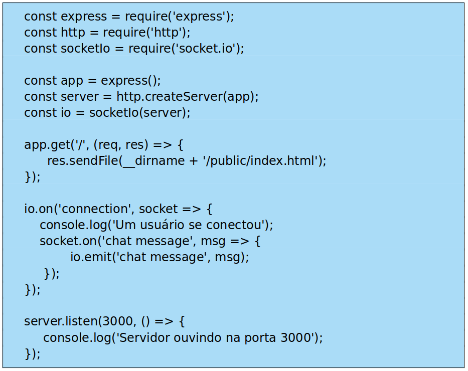
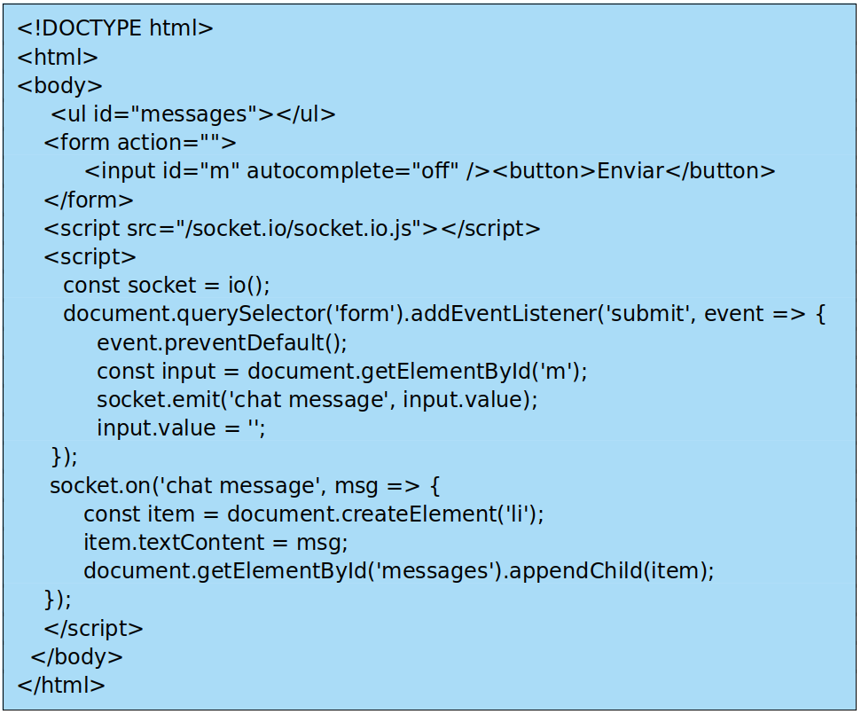
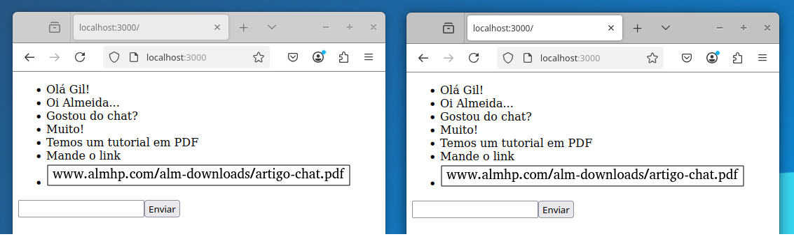

Criando uma aplicação de Chat em Tempo Real com JavaScript e Socket.io
Neste tutorial, vamos criar uma aplicação de chat em tempo real utilizando o JavaScript e Socket.io.
O tutorial inclui exemplos de código e sugestões de funcionalidades adicionais, sendo indicado para desenvolvedores intermediários.
O Socket.io e uma biblioteca JavaScript que facilita a comunicação bidirecional entre cliente e servidor, utilizando WebSockets. Com ela, podemos desenvolver aplicações de chat de forma eficiente e simples.
Para a prática deste projeto, utilizaremos o sistema operacional Linux, especificamente a distribuição Ubuntu 20.04. Organizaremos a implementação em etapas para facilitar o entendimento e a execução.
Etapa 1 – Configurando um Servidor Node.js com Socket.io
Primeiramente, abra o terminal pressionando Ctrl + Alt + T, certifique-se de que você tem o Node.js e o npm instalados em seu sistema, depois siga os passos abaixo.
1. Crie uma pasta para o projeto:
nkdir almchat
2. Entre na pasta e inicialize o projeto Node.js:
cd almchat npm init -y
3. Instale as dependências necessárias:
npm install express socket.io
4. Crie o arquivo do servidor:
touch server.js
5. Abra seu editor de código preferido, para o arquivo server.js:
sudo mousepad server.js
6. No arquivo server.js adicione o seguinte código:
server.js

Salve e feche o arquivo.
Etapa 2 – Criando a Interface do Chat
Agora, precisamos criar uma página HTML para a interface do chat. Siga os passos abaixo:
1. Crie um arquivo index.html:
touch index.html
2. Abra seu editor de código preferido para o arquivo index.html:
sudo mousepad index.html
3. No arquivo index.html adicione o seguinte código:
index.html

Salve e feche o arquivo.
Este arquivo HTML inclui um formulário para o envio de mensagens e uma área para exibição das mensagens recebidas, eliminando a necessidade de um arquivo JavaScript separado para o cliente.
A conexão com o servidor via Socket.io é realizada diretamente aqui, permitindo capturar os valores inseridos pelo usuário e enviar as mensagens ao servidor de forma integrada.
Testando a aplicação
1. Entre na pasta do projeto e inicie o servidor:
cd almchat node server.js
2. Abra o navegador e acesse:
http://localhost:3000
3. Abra duas abas no navegador para testar a troca de mensagens em tempo real.
Veja o nosso Chat funcionando!

Salve e feche o arquivo.
Conclusão
Criamos uma aplicação de chat em tempo real utilizando JavaScript, Node.js e Socket.io.
Essa estrutura pode ser expandida para incluir novas funcionalidades, como armazenamento de mensagens, suporte a emojis e autenticação de usuários.
Essa prática foi adaptada para usuários Linux e pode ser facilmente implementada em outros ambientes.
por Antonio Almeida
e-mail tonical2k11@gmail.com
Referência
"Se você gostou deste artigo, confira o tutorial completo em PDF clicando aqui."